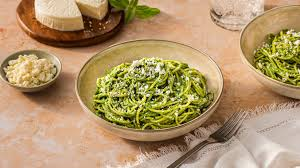

green spaghetti

description
ingredients
- 12 oz (about 340g) spaghetti
- 4 cups fresh spinach leaves
- 1 cup fresh basil leaves
- 2 cloves garlic, minced
- 1/2 cup grated Parmesan cheese
- 1/4 cup olive oil
- Salt and pepper to taste
steps
- Cook the spaghetti according to the package instructions in a large pot of salted boiling water until al dente. Drain and set aside.
- In a food processor or blender, combine the fresh spinach leaves, basil leaves, minced garlic, pine nuts (if using), grated Parmesan cheese, and olive oil.
- Blend the ingredients until smooth, adding more olive oil if necessary to reach your desired consistency. Season the sauce with salt and pepper to taste.
- In a large skillet, heat the green sauce over medium heat until warmed through, stirring occasionally.
- Add the cooked spaghetti to the skillet with the green sauce, tossing gently to coat the pasta evenly.
- Cook for an additional 2-3 minutes, allowing the spaghetti to absorb the flavors of the sauce.
- Serve the green spaghetti hot, garnished with additional grated Parmesan cheese if desired.